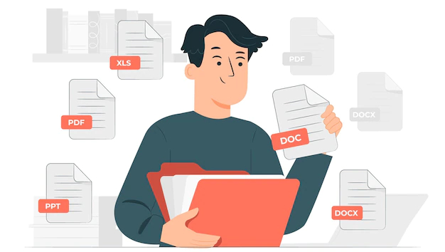

If you manage email for a living, you know how important it is to protect your sender's reputation. One way to do that is by using DMARC. DMARC stands for “Domain-based Message Authentication, Reporting, and Conformance”. It’s a system that helps email senders and receivers verify that email is coming from a legitimate source, and it also provides a way to track and report on email that doesn’t pass the DMARC check. In this post, we’ll cover everything you need to know about DMARC reports.
DMARC (Domain-based Message Authentication Reporting and Conformance) is a validation system designed to safeguard your company's domain from being used for the purpose of email spoofing, phishing scams, and other cybercrimes. DMARC relies on the existing authentication methods SPF (Sender Policy Framework), and DKIM (Domain Keys Identified Mail). Domain owners can examine their DMARC records in the DNS protocol to gain insight into who is sending emails to their domain. This information is collected to get details about the email channel. Equipped with this information, domain owners can get control over emails sent on their behalf. You can use DMARC to safeguard your domain names from being abused in phishing or spoofing attacks.

DMARC reports include significant information regarding the validity of emails sent by a domain name. When you create a DMARC record and publish it to your Domain Name System (DNS), you will receive data about all sending sources using your domain.
This report will contain information concerning the domain, the policy implemented (none, quarantine, or refuse), and the enforcement level (strict or relaxed). Learning how to read DMARC reports is essential for DMARC compliance and effective email security.
There are two different types of DMARC reports:
These reports are sent to email recipients by email senders for them to examine various components of their outbound emails.
Aggregate reports are received every 24 hours and provide the origination details of your emails, including the source IP address your email was generated from and the result of your SPF and DKIM authentication. These two email authentication mechanisms are used by senders to authorize their email sources. Aggregate details are used to determine which sources are legitimate and authorize them to be logged in accordingly.
Forensic reports are received, each and every time your email fails the fundamental authentication checks, SPF and DKIM. They are used to conduct in-depth research and analysis of emails sent from an address associated with your domain in order to examine whether such an email has been spoofed. Such reports may include the particulars of the spoofed email, such as an email address to an address, the subject, and the header of the email. It is encouraged to enable these reports after aggregate reports are established and all of your legitimate sources are authorized, reducing noise on your firewall and avoiding spoofed emails.
Aggregate reports help you find and respond to legitimate solicitations while forensic reports guide you in neutralizing false solicitations and attacking fraudulent attributes. These reports are based on the DMARC framework, which proves crucial to eliminating email-based impersonation fraud.
DMARC reports inform DMARC enforcement. Therefore, we have broken up a few best practices to aid you in the learning process and stop you from making simple errors.
In summary, DMARC is the new way to reduce phishing by stopping domain spoofing. The new standard allows a brand or company to have control over what happens with their email. DMARC enables email administrators to stop spoofing at the domain level. No more spoofing, no more phishing. It's time to take back control of your brand.